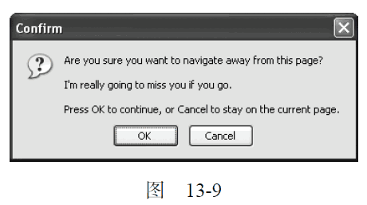

13.4.7 HTML5 事件
DOM 规范没有涵盖所有浏览器支持的所有事件。很多浏览器出于不同的目的——满足用户需求或解决特殊问题，还实现了一些自定义的事件。HTML5 详尽列出了浏览器应该支持的所有事件。本节只讨论其中得到浏览器完善支持的事件，但并非全部事件。（其他事件会在本书其他章节讨论。）
1. contextmenu 事件
Windows 95 在PC 中引入了上下文菜单的概念，即通过单击鼠标右键可以调出上下文菜单。不久，这个概念也被引入了Web 领域。为了实现上下文菜单，开发人员面临的主要问题是如何确定应该显示上下文菜单（在Windows 中，是右键单击；在Mac 中，是Ctrl+单击），以及如何屏蔽与该操作关联的默认上下文菜单。为解决这个问题，就出现了contextmenu 这个事件，用以表示何时应该显示上下文菜单，以便开发人员取消默认的上下文菜单而提供自定义的菜单。
由于contextmenu 事件是冒泡的，因此可以为document 指定一个事件处理程序，用以处理页面中发生的所有此类事件。这个事件的目标是发生用户操作的元素。在所有浏览器中都可以取消这个事件：
在兼容DOM的浏览器中，使用event.preventDefalut()；在IE 中，将event.returnValue 的值设置为false。因为contextmenu 事件属于鼠标事件，所以其事件对象中包含与光标位置有关的所有属性。通常使用contextmenu 事件来显示自定义的上下文菜单，而使用onclick 事件处理程序来隐藏该菜单。以下面的HTML 页面为例。
<!DOCTYPE html>
<html>
<head>
<title>ContextMenu Event Example</title>
</head>
<body>
<div id="myDiv">Right click or Ctrl+click me to get a custom context menu.
Click anywhere else to get the default context menu.</div>
<ul id="myMenu" style="position:absolute;visibility:hidden;background-color:
silver">
<li><a href="http://www.nczonline.net">Nicholas’ site</a></li>
<li><a href="http://www.wrox.com">Wrox site</a></li>
<li><a href="http://www.yahoo.com">Yahoo!</a></li>
</ul>
</body>
</html>
运行一下
这里的<div>元素包含一个自定义的上下文菜单。其中，<ul>元素作为自定义上下文菜单，并且在初始时是隐藏的。实现这个例子的JavaScript 代码如下所示。
EventUtil.addHandler(window, "load",
function(event) {
var div = document.getElementById("myDiv");
EventUtil.addHandler(div, "contextmenu",
function(event) {
event = EventUtil.getEvent(event);
EventUtil.preventDefault(event);
var menu = document.getElementById("myMenu");
menu.style.left = event.clientX + "px";
menu.style.top = event.clientY + "px";
menu.style.visibility = "visible";
});
EventUtil.addHandler(document, "click",
function(event) {
document.getElementById("myMenu").style.visibility = "hidden";
});
});
运行一下
在这个例子中，我们为<div>元素添加了oncontextmenu 事件的处理程序。这个事件处理程序首先会取消默认行为，以保证不显示浏览器默认的上下文菜单。然后，再根据event 对象clientX 和clientY 属性的值，来确定放置<ul>元素的位置。最后一步就是通过将visibility 属性设置为"visible"来显示自定义上下文菜单。另外，还为document 添加了一个onclick 事件处理程序，以便用户能够通过鼠标单击来隐藏菜单（单击也是隐藏系统上下文菜单的默认操作）。
虽然这个例子很简单，但它却展示了Web 上所有自定义上下文菜单的基本结构。只需为这个例子中的上下文菜单添加一些CSS 样式，就可以得到非常棒的效果。
支持contextmenu 事件的浏览器有IE、Firefox、Safari、Chrome 和Opera 11+。
2. beforeunload 事件
之所以有发生在window 对象上的beforeunload 事件，是为了让开发人员有可能在页面卸载前阻止这一操作。这个事件会在浏览器卸载页面之前触发，可以通过它来取消卸载并继续使用原有页面。
但是，不能彻底取消这个事件，因为那就相当于让用户无法离开当前页面了。为此，这个事件的意图是将控制权交给用户。显示的消息会告知用户页面行将被卸载（正因为如此才会显示这个消息），询问用户是否真的要关闭页面，还是希望继续留下来（见图13-9）。

为了显示这个弹出对话框，必须将event.returnValue 的值设置为要显示给用户的字符串（对IE 及Fiefox 而言），同时作为函数的值返回（对Safari 和Chrome 而言），如下面的例子所示。
EventUtil.addHandler(window, "beforeunload",
function(event) {
event = EventUtil.getEvent(event);
var message = "I'm really going to miss you if you go.";
event.returnValue = message;
return message;
});
运行一下
IE 和Firefox、Safari 和Chrome 都支持beforeunload 事件，也都会弹出这个对话框询问用户是否真想离开。Opera 11 及之前的版本不支持beforeunload 事件。
3. DOMContentLoaded 事件
如前所述，window 的load 事件会在页面中的一切都加载完毕时触发，但这个过程可能会因为要加载的外部资源过多而颇费周折。而DOMContentLoaded 事件则在形成完整的DOM 树之后就会触发，不理会图像、JavaScript 文件、CSS 文件或其他资源是否已经下载完毕。与load 事件不同，DOMContentLoaded 支持在页面下载的早期添加事件处理程序，这也就意味着用户能够尽早地与页面进行交互。
要处理DOMContentLoaded 事件，可以为document 或window 添加相应的事件处理程序（尽管这个事件会冒泡到window，但它的目标实际上是document）。来看下面的例子。
EventUtil.addHandler(document, "DOMContentLoaded", function(event){
alert("Content loaded");
});
运行一下
DOMContentLoaded 事件对象不会提供任何额外的信息（其target 属性是document）。
IE9+、Firefox、Chrome、Safari 3.1+和Opera 9+都支持DOMContentLoaded 事件，通常这个事件既可以添加事件处理程序，也可以执行其他DOM 操作。这个事件始终都会在load 事件之前触发。对于不支持DOMContentLoaded 的浏览器，我们建议在页面加载期间设置一个时间为0 毫秒的超时调用，如下面的例子所示。
setTimeout(function(){
//在此添加事件处理程序
}, 0);
这段代码的实际意思就是：“在当前JavaScript 处理完成后立即运行这个函数。”在页面下载和构建期间，只有一个JavaScript 处理过程，因此超时调用会在该过程结束时立即触发。至于这个时间与DOMContentLoaded 被触发的时间能否同步，主要还是取决于用户使用的浏览器和页面中的其他代码。
为了确保这个方法有效，必须将其作为页面中的第一个超时调用；即便如此，也还是无法保证在所有环境中该超时调用一定会早于load 事件被触发。
4. readystatechange 事件
IE 为DOM文档中的某些部分提供了readystatechange 事件。这个事件的目的是提供与文档或元素的加载状态有关的信息，但这个事件的行为有时候也很难预料。支持readystatechange 事件的每个对象都有一个readyState 属性，可能包含下列5 个值中的一个。
-
uninitialized（未初始化）：对象存在但尚未初始化。
-
loading（正在加载）：对象正在加载数据。
-
loaded（加载完毕）：对象加载数据完成。
-
interactive（交互）：可以操作对象了，但还没有完全加载。
-
complete（完成）：对象已经加载完毕。
这些状态看起来很直观，但并非所有对象都会经历readyState 的这几个阶段。换句话说，如果某个阶段不适用某个对象，则该对象完全可能跳过该阶段；并没有规定哪个阶段适用于哪个对象。显然，这意味着readystatechange 事件经常会少于4 次，而readyState 属性的值也不总是连续的。
对于document 而言，值为"interactive"的readyState 会在与DOMContentLoaded 大致相同的时刻触发readystatechange 事件。此时，DOM树已经加载完毕，可以安全地操作它了，因此就会进入交互（interactive）阶段。但与此同时，图像及其他外部文件不一定可用。下面来看一段处理readystatechange 事件的代码。
EventUtil.addHandler(document, "readystatechange",
function(event) {
if (document.readyState == "interactive") {
alert("Content loaded");
}
});
这个事件的event 对象不会提供任何信息，也没有目标对象。
在与load 事件一起使用时，无法预测两个事件触发的先后顺序。在包含较多或较大的外部资源的页面中，会在load 事件触发之前先进入交互阶段；而在包含较少或较小的外部资源的页面中，则很难说readystatechange 事件会发生在load 事件前面。
让问题变得更复杂的是，交互阶段可能会早于也可能会晚于完成阶段出现，无法确保顺序。在包含较多外部资源的页面中，交互阶段更有可能早于完成阶段出现；而在页面中包含较少外部资源的情况下，完成阶段先于交互阶段出现的可能性更大。因此，为了尽可能抢到先机，有必要同时检测交互和完成阶段，如下面的例子所示。
EventUtil.addHandler(document, "readystatechange",
function(event) {
if (document.readyState == "interactive" || document.readyState == "complete") {
EventUtil.removeHandler(document, "readystatechange", arguments.callee);
alert("Content loaded");
}
});
对于上面的代码来说，当readystatechange 事件触发时，会检测document.readyState 的值，看当前是否已经进入交互阶段或完成阶段。如果是，则移除相应的事件处理程序以免在其他阶段再执行。
注意，由于事件处理程序使用的是匿名函数，因此这里使用了arguments.callee 来引用该函数。然后，会显示一个警告框，说明内容已经加载完毕。这样编写代码可以达到与使用DOMContentLoaded十分相近的效果。
支持readystatechange 事件的浏览器有IE、Firfox 4+和Opera。
虽然使用readystatechange 可以十分近似地模拟DOMContentLoaded 事件，但它们本质上还是不同的。在不同页面中，load 事件与readystatechange 事件并不能保证以相同的顺序触发。
另外， <script>（在IE 和Opera 中）和<link>（仅IE 中）元素也会触发readystatechange事件，可以用来确定外部的JavaScript 和CSS 文件是否已经加载完成。与在其他浏览器中一样，除非把动态创建的元素添加到页面中， 否则浏览器不会开始下载外部资源。基于元素触发的readystatechange 事件也存在同样的问题， 即readyState 属性无论等于"loaded" 还是"complete"都可以表示资源已经可用。有时候，readyState 会停在"loaded"阶段而永远不会“完成”；
有时候，又会跳过"loaded"阶段而直接“完成”。于是，还需要像对待document 一样采取相同的编码方式。例如，下面展示了一段加载外部JavaScript 文件的代码。
EventUtil.addHandler(window, "load",
function() {
var script = document.createElement("script");
EventUtil.addHandler(script, "readystatechange",
function(event) {
event = EventUtil.getEvent(event);
var target = EventUtil.getTarget(event);
if (target.readyState == "loaded" || target.readyState == "complete") {
EventUtil.removeHandler(target, "readystatechange", arguments.callee);
alert("Script Loaded");
}
});
script.src = "example.js";
document.body.appendChild(script);
});
运行一下
这个例子为新创建的<script>节点指定了一个事件处理程序。事件的目标是该节点本身，因此当触发readystatechange 事件时， 要检测目标的readyState 属性是不是等于"loaded" 或"complete"。如果进入了其中任何一个阶段，则移除事件处理程序（以防止被执行两次），并显示一个警告框。与此同时，就可以执行已经加载完毕的外部文件中的函数了。
同样的编码方式也适用于通过<link>元素加载CSS 文件的情况，如下面的例子所示。
EventUtil.addHandler(window, "load",
function() {
var link = document.createElement("link");
link.type = "text/css";
link.rel = "stylesheet";
EventUtil.addHandler(script, "readystatechange",
function(event) {
event = EventUtil.getEvent(event);
var target = EventUtil.getTarget(event);
if (target.readyState == "loaded" || target.readyState == "complete") {
EventUtil.removeHandler(target, "readystatechange", arguments.callee);
alert("CSS Loaded");
}
});
link.href = "example.css";
document.getElementsByTagName("head")[0].appendChild(link);
});
运行一下
同样，最重要的是要一并检测readyState 的两个状态，并在调用了一次事件处理程序后就将其移除。
5. pageshow 和pagehide 事件
Firefox 和Opera 有一个特性，名叫“往返缓存”（back-forward cache，或bfcache），可以在用户使用浏览器的“后退”和“前进”按钮时加快页面的转换速度。这个缓存中不仅保存着页面数据，还保存了DOM 和JavaScript 的状态；实际上是将整个页面都保存在了内存里。如果页面位于bfcache 中，那么再次打开该页面时就不会触发load 事件。尽管由于内存中保存了整个页面的状态，不触发load 事件也不应该会导致什么问题，但为了更形象地说明bfcache 的行为，Firefox 还是提供了一些新事件。
第一个事件就是pageshow，这个事件在页面显示时触发，无论该页面是否来自bfcache。在重新加载的页面中，pageshow 会在load 事件触发后触发；而对于bfcache 中的页面，pageshow 会在页面状态完全恢复的那一刻触发。另外要注意的是，虽然这个事件的目标是document，但必须将其事件处理程序添加到window。来看下面的例子。
(function() {
var showCount = 0;
EventUtil.addHandler(window, "load",
function() {
alert("Load fired");
});
EventUtil.addHandler(window, "pageshow",
function() {
showCount++;
alert("Show has been fired " + showCount + " times.");
});
})();
这个例子使用了私有作用域，以防止变量showCount 进入全局作用域。当页面首次加载完成时，showCount 的值为0。此后，每当触发pageshow 事件，showCount 的值就会递增并通过警告框显示出来。如果你在离开包含以上代码的页面之后，又单击“后退”按钮返回该页面，就会看到showCount每次递增的值。这是因为该变量的状态，乃至整个页面的状态，都被保存在了内存中，当你返回这个页面时，它们的状态得到了恢复。如果你单击了浏览器的“刷新”按钮，那么showCount 的值就会被重置为0，因为页面已经完全重新加载了。
除了通常的属性之外，pageshow 事件的event 对象还包含一个名为persisted 的布尔值属性。
如果页面被保存在了bfcache 中，则这个属性的值为true；否则，这个属性的值为false。可以像下面这样在事件处理程序中检测这个属性。
(function() {
var showCount = 0;
EventUtil.addHandler(window, "load",
function() {
alert("Load fired");
});
EventUtil.addHandler(window, "pageshow",
function() {
showCount++;
alert("Show has been fired " + showCount + " times. Persisted? " + event.persisted);
});
})();
运行一下
通过检测persisted 属性，就可以根据页面在bfcache 中的状态来确定是否需要采取其他操作。
与pageshow 事件对应的是pagehide 事件，该事件会在浏览器卸载页面的时候触发，而且是在unload 事件之前触发。与pageshow 事件一样，pagehide 在document 上面触发，但其事件处理程序必须要添加到window 对象。这个事件的event 对象也包含persisted 属性，不过其用途稍有不同。
来看下面的例子。
EventUtil.addHandler(window, "pagehide", function(event){
alert("Hiding. Persisted? " + event.persisted);
});
运行一下
有时候，可能需要在pagehide 事件触发时根据persisted 的值采取不同的操作。对于pageshow事件，如果页面是从bfcache 中加载的，那么persisted 的值就是true；对于pagehide 事件，如果页面在卸载之后会被保存在bfcache 中，那么persisted 的值也会被设置为true。因此，当第一次触发pageshow 时，persisted 的值一定是false，而在第一次触发pagehide 时，persisted 就会变成true（除非页面不会被保存在bfcache 中）。
支持pageshow 和pagehide 事件的浏览器有Firefox、Safari 5+、Chrome 和Opera。IE9 及之前版本不支持这两个事件。
指定了onunload 事件处理程序的页面会被自动排除在 bfcache 之外，即使事件处理程序是空的。原因在于，onunload 最常用于撤销在onload 中所执行的操作，而跳过onload 后再次显示页面很可能就会导致页面不正常。
6. hashchange 事件
HTML5 新增了hashchange 事件，以便在URL 的参数列表（及URL 中“#”号后面的所有字符串）发生变化时通知开发人员。之所以新增这个事件，是因为在Ajax 应用中，开发人员经常要利用URL 参数列表来保存状态或导航信息。
必须要把hashchange 事件处理程序添加给window 对象，然后URL 参数列表只要变化就会调用它。此时的event 对象应该额外包含两个属性：oldURL 和newURL。这两个属性分别保存着参数列表变化前后的完整URL。例如：
EventUtil.addHandler(window, "hashchange", function(event){
alert("Old URL: " + event.oldURL + "\nNew URL: " + event.newURL);
});
运行一下
支持hashchange 事件的浏览器有IE8+、Firefox 3.6+、Safari 5+、Chrome 和Opera 10.6+。在这些浏览器中，只有Firefox 6+、Chrome 和Opera 支持oldURL 和newURL 属性。为此，最好是使用location对象来确定当前的参数列表。
EventUtil.addHandler(window, "hashchange", function(event){
alert("Current hash: " + location.hash);
});
使用以下代码可以检测浏览器是否支持hashchange 事件：
var isSupported = ("onhashchange" in window); //这里有bug
如果IE8 是在IE7 文档模式下运行，即使功能无效它也会返回true。为解决这个问题，可以使用以下这个更稳妥的检测方式：
var isSupported = ("onhashchange" in window) && (document.documentMode ===undefined || document.documentMode > 7);